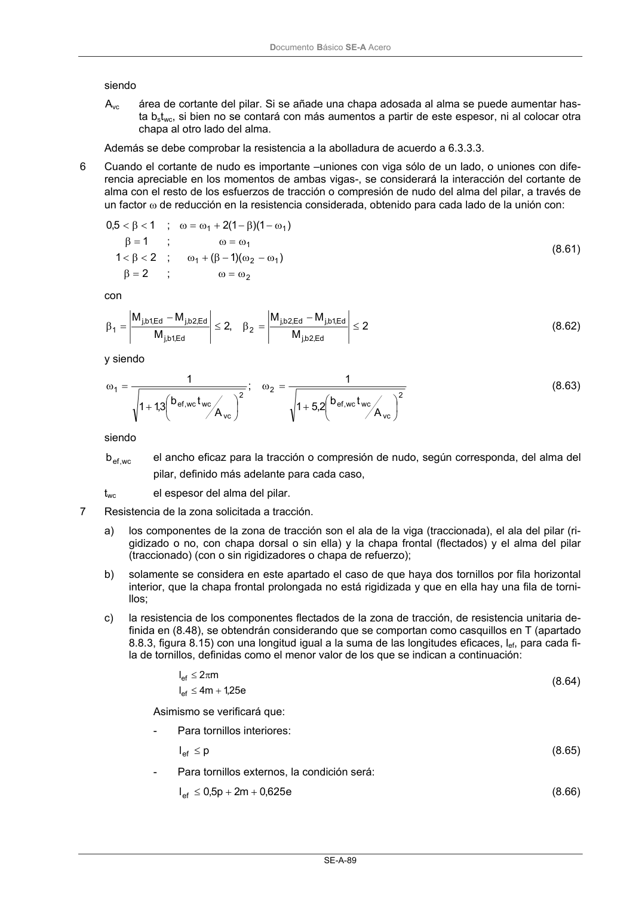

DB-SE-A Acero · edición 2007-10-23 · capa oficial
Documento DB-SE-A-oficial · SHA-256 del PDF 9ed9ea694aabfbda3bfbbef40dfe9223fde05d13c35bc2ba9751e5a96a22a64f
Página física 91 de 168.
Copia fiel del PDF fuente · Fuente oficial
Ficha de la disposición en la fuente oficial
Formato: Texto de la página (Markdown)
Documento Básico SE-A Acero SE-A-89 siendo Avc área de cortante del pilar. Si se añade una chapa adosada al alma se puede aumentar has- ta bstwc, si bien no se contará con más aumentos a partir de este espesor, ni al colocar otra chapa al otro lado del alma. Además se debe comprobar la resistencia a la abolladura de acuerdo a 6.3.3.3. 6 Cuando el cortante de nudo es importante –uniones con viga sólo de un lado, o uniones con dife- rencia apreciable en los momentos de ambas vigas-, se considerará la interacción del cortante de alma con el resto de los esfuerzos de tracción o compresión de nudo del alma del pilar, a través de un factor ω de reducción en la resistencia considerada, obtenido para cada lado de la unión con: 2 1 2 1 1 1 1 ; ) )( 1 ( ; ; ) 1 )( 1 ( 2 ; 2 2 1 1 1 5,0 ω = ω ω − ω − β + ω ω = ω ω − β − + ω = ω = β < β < = β < β < (8.61) con 2 M M M ,2 M M M Ed , 2 b,j Ed ,1 b,j Ed ,2 b,j 2 Ed ,1 b,j Ed , 2 b,j Ed ,1 b,j 1 ≤ − = β ≤ − = β (8.62) y siendo 2 vc wc wc , ef 2 2 vc wc wc , ef 1 A t b 2,5 1 1 ; A t b 3,1 1 1 + = ω + = ω (8.63) siendo wc , ef b el ancho eficaz para la tracción o compresión de nudo, según corresponda, del alma del pilar, definido más adelante para cada caso, twc el espesor del alma del pilar. 7 Resistencia de la zona solicitada a tracción. a) los componentes de la zona de tracción son el ala de la viga (traccionada), el ala del pilar (ri- gidizado o no, con chapa dorsal o sin ella) y la chapa frontal (flectados) y el alma del pilar (traccionado) (con o sin rigidizadores o chapa de refuerzo); b) solamente se considera en este apartado el caso de que haya dos tornillos por fila horizontal interior, que la chapa frontal prolongada no está rigidizada y que en ella hay una fila de torni- llos; c) la resistencia de los componentes flectados de la zona de tracción, de resistencia unitaria de- finida en (8.48), se obtendrán considerando que se comportan como casquillos en T (apartado 8.8.3, figura 8.15) con una longitud igual a la suma de las longitudes eficaces, lef, para cada fi- la de tornillos, definidas como el menor valor de los que se indican a continuación: e 25 ,1 m 4 l m 2 l ef ef + ≤ π ≤ (8.64) Asimismo se verificará que: - Para tornillos interiores: p lef ≤ (8.65) - Para tornillos externos, la condición será: e 625 ,0 m 2 p 5,0 lef + + ≤ (8.66)

Datos candidatos: compruebe celdas y notas en el PDF.